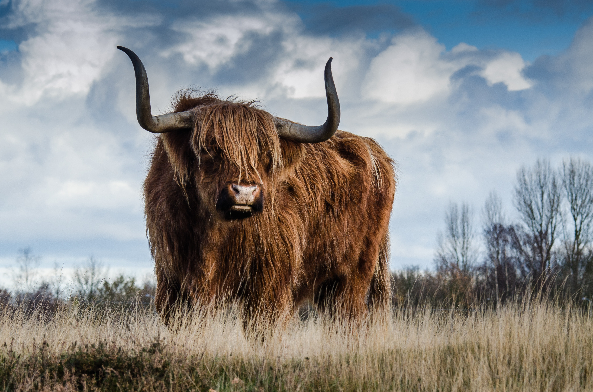

Beef, it's what's for dinner
Introduction to Beef Demand for beef is expanding, propelled by a rising growth of global population, rising incomes, urbanization, and westernization of diets in developing countries which is expected to continue in the next several decades (by approximately 60 percent by 2050). The U.S., Europe, and Brazil are the largest producers of Beef, accounting for one-third of Global Production. Global beef exports have risen in recent years from 5 percent annually to 20 percent in 2022. In the U.S., given abundant grasslands and a large grain supply, the beef industry is not as closely linked to the dairy sector.
Commodity Overview
Beef Is the third most commonly consumed meat in the world, after Pork and Chicken. Beef products are typically sold as wholesale cuts, ground beef for commercial use, or packaged cuts sold in retail outlets. Beef by-products, including leather and fat, are used for many non-food items, including candles, crayons, paint, and shoes.
Government's Role
In the U.S., several dynamics have driven the rise in beef production over the last decade. These include government policies that support livestock farming through protective measures or subsidies, national dietary trends, escalating international demand, and cycles of elevated prices for livestock commodities. Additionally, influential lobbyist-funded organizations, such as the Cattlemen's Beef Board and the National Cattlemen's Beef Association, have played significant roles in advocating for the interests of beef producers. As a result of these factors, the number of cattle raised for beef in the U.S. witnessed a 10 percent growth between 2019 and 2020.